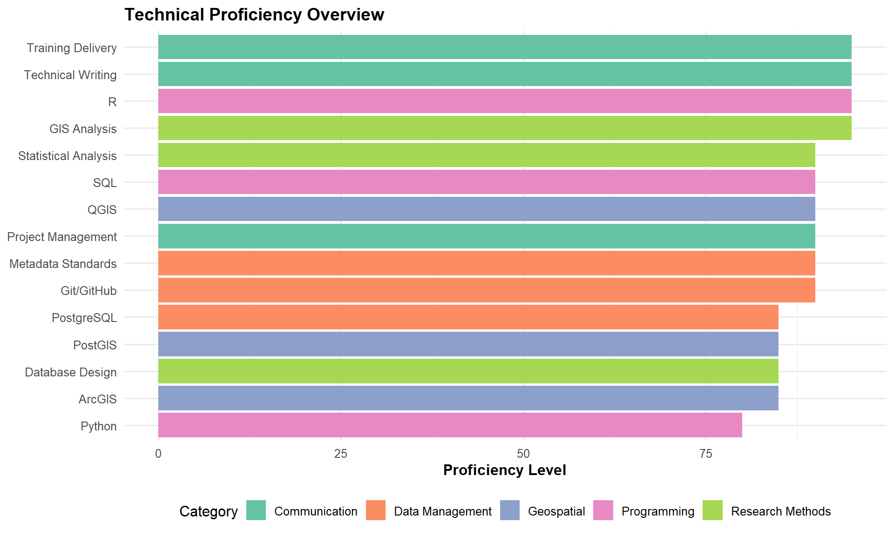

Skills & Tools
Technical Skills Matrix
My skillset combines archaeological expertise with modern data science capabilities:
Core Competencies
R Programming
Expertise Level: Advanced
Applications:
- Statistical analysis and modeling
- Data visualization with ggplot2
- Spatial analysis with sf, terra, raster
- Reproducible reporting with R Markdown and Quarto
- Package development
- Automation and scripting
Example Projects:
- Archaeological survey data analysis
- Spatial statistics for settlement patterns
- Automated report generation
- Data visualization dashboards
Python
Expertise Level: Intermediate-Advanced
Applications:
- Data processing and cleaning
- Geospatial analysis (geopandas, shapely)
- Web scraping and automation
- Database interactions
- Jupyter notebooks for analysis
Database Management
PostgreSQL + PostGIS:
- Database design and architecture
- Complex queries and data manipulation
- Spatial database operations
- Performance optimization
- Data integration pipelines
Applications:
- Linear Earthworks database (Durham project)
- Archaeological site databases
- Heritage data management systems
Geospatial Analysis
QGIS & ArcGIS:
- Spatial analysis and modeling
- Cartography and map production
- Least Cost Path analysis
- Viewshed and visibility analysis
- Network analysis
PostGIS:
- Spatial queries and operations
- Coordinate system transformations
- Geometric calculations
- Integration with PostgreSQL
Version Control & Collaboration
Git & GitHub:
- Version control workflows
- Collaborative development
- Documentation with GitHub Pages
- Issue tracking and project management
Research Methods
Spatial Analysis
Code
# Example: Least Cost Path Analysis in R
library(sf)
library(terra)
library(gdistance)
# Load elevation data
dem <- rast("elevation.tif")
# Create cost surface
slope <- terrain(dem, "slope")
cost_surface <- 1 / (1 + slope) # Inverse relationship
# Calculate transition matrix
trans <- transition(cost_surface, transitionFunction = mean, directions = 8)
trans_corrected <- geoCorrection(trans)
# Find least cost path between points
start <- c(longitude1, latitude1)
end <- c(longitude2, latitude2)
lcp <- shortestPath(trans_corrected, start, end, output = "SpatialLines")Statistical Analysis
- Exploratory data analysis
- Hypothesis testing
- Regression modeling
- Spatial statistics
- Bayesian analysis
- Time series analysis
Data Visualization
Code
# Example: Archaeological site distribution map
library(tidyverse)
library(sf)
sites %>%
ggplot() +
geom_sf(aes(color = period, size = importance)) +
scale_color_viridis_d() +
theme_minimal() +
labs(
title = "Distribution of Archaeological Sites",
subtitle = "Iron Age and Roman Britain",
color = "Period",
size = "Site Importance"
)Tools & Technologies
Development & Documentation
Development - RStudio - VS Code - Jupyter Lab - Command Line/Terminal
Documentation - Quarto - R Markdown - MkDocs - Jupyter Notebooks - LaTeX
Data & Research Management
Data Processing - tidyverse (R) - pandas (Python) - OpenRefine - Excel/LibreOffice
Research Management - Git/GitHub - Zotero - OSF (Open Science Framework) - OASIS database
Specialized Heritage Tools
- Digital recording equipment (GNSS, Total Station)
- 3D modeling (Structure from Motion)
- Laser scanning
- Archaeological databases
- Heritage data standards
Certifications & Training
- Carpentries Certified Instructor
- Research Data Management specialist training
- FAIR Principles implementation
- Open Science practices
- Project Management for research
Continuous Learning
I’m committed to staying current with emerging technologies:
Currently Exploring:
- Advanced R package development
- Machine learning applications in archaeology
- Cloud computing for research (AWS, Google Cloud)
- Interactive web applications (Shiny, Dash)
- Linked Open Data for heritage
Consulting Services
I offer consulting in:
Get in touch to discuss your project needs.